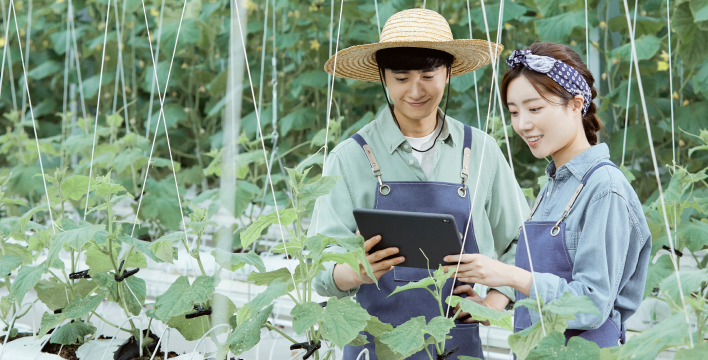

교육운영방향
-
개발과 확산의 주체로서 농촌진흥공무원 역량강화
- 연구·지도직 경력단계별 체계적인 교육과정 설계·운영
- 연구개발 및 기술보급을 위한 디지털 직무역량 강화
- 현장대응 및 문제해결역량 교육 강화
- 환경변화 대응을 위한 디지털·기획력 등 직무공통 교육 확대
-

미래농업 대응 전문농업인력 양성
- 농업인 기술수준 진단을 통한 맞춤형 교육으로 개편
- 테스트베드를 활용한 농업인 교육 활성화 지원
- 농업정책 신속 확산 및 효율적 운영을 위한 유관기관·부서 협력 강화
- 농업인 수준별 교육 추진상황 모니터링 및 의견수렴 등
-
첨단 농업기계 기술 인력 육성
- 농업기계 전문인력 양성을 위한 교육 체계 수립
- 정비인력 양성을 위한 수준별 교육 및 안전의식 제고
- 첨단 농업기계 교육 강화 및 신수요자 대상 맞춤형 교육
-
디지털 기반 학습관리시스템을 통한 맞춤형 교육훈련 지원
- 맞춤형 학습제공을 위한 차세대 학습관리시스템(e-HRD) 구축
- 온라인 교육 활성화 및 학습관리시스템 이용률 제고
- 강사부족 문제해결을 위한 하이브리드러닝 활성화 추진
-
농업 · 농촌 교육훈련 전문기관으로서 조직 효율성 제고
- 신설기구 평가결과 반영 및 기관운영 효율화를 위한 개편
- 중앙-지방 및 유관기관의 협력 내실화
- 창의적으로 신나게 일하는 조직문화 창출
-
공무원
농촌인적자원개발센터 교육분류체계 중 공무원 목록 | 분류, 유형, 정의기준으로 구성됨 분류 유형 정의기준 직무교육 직무공통 정보화 및 통계, 대화토론능력, 공통기타 직종별 역량 연구역량, 지도역량, 행정역량, 공무직 역량, 청원경찰 역량 농업경영융복합 창업, 회계, 경영컨설팅, 상품기획, 안전보건, 문화체험관광, 기타 농업전문기술 식량, 채소, 과수, 특작, 축산, 환경, 기타 농업기계훈련 기계화 농작업, 정비, 스마트농업, 기타 계층교육 공통교육 공직가치, 정책 기본교육 신규연구사, 신규지도사, 신규일반직 심화교육 신진연구자, 선임연구자, 책임연구자, 중견지도사 리더십/관리자교육 과장급 이상, 5급, 6급 이하, 기타 특별교육 및 기타 조직개발 - 기타 - -
농업인
농촌인적자원개발센터 교육분류체계 중 농업인 목록 | 분류, 유형, 정의기준으로 구성됨 분류 유형 정의기준 전문역량 농업경영 농생명산업 및 진로, 농업경영 융복합, 브랜드 및 디자인, 유통, 정보화, 공감·소통대화능력, 기타 품목별 전문기술 식량, 채소, 과수, 특작, 축산, 환경, 곤충, 기타 정책지원 스마트농업 - 농업기계훈련 - 취창업 교육 - 기타 - -
일반인
농촌인적자원개발센터 교육분류체계 중 일반인 목록 | 분류, 유형, 정의기준으로 구성됨 분류 유형 정의기준 농업경영 농생명산업 - 진로 - 농업경영 융복합 - 브랜드 및 디자인 - 유통 - 정보화 - 기타 - 정책지원 스마트농업 - 농업기계훈련 - 취창업 교육 - 기타 -